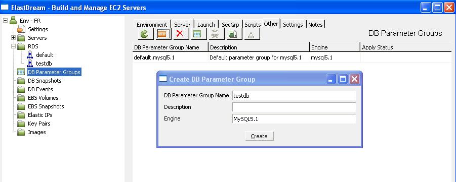
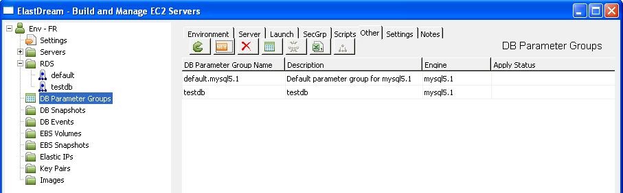
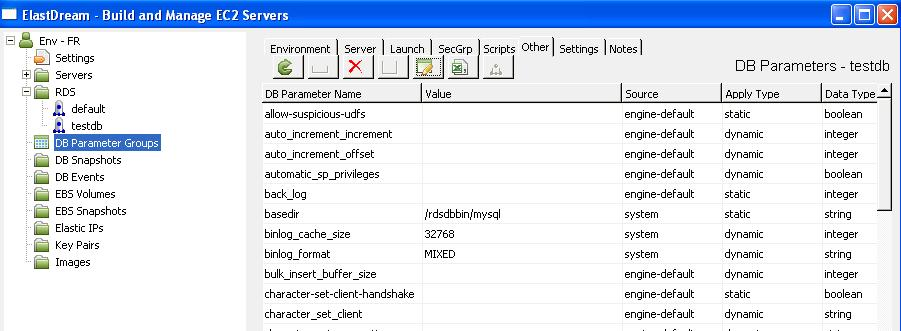
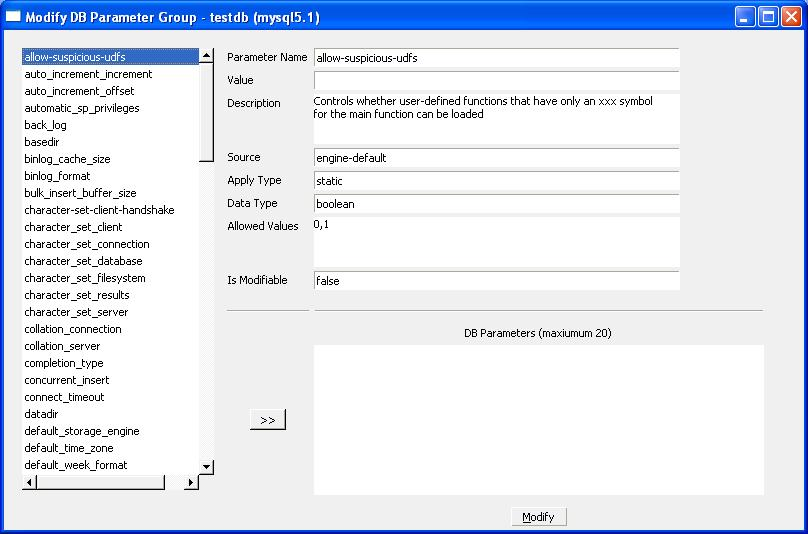
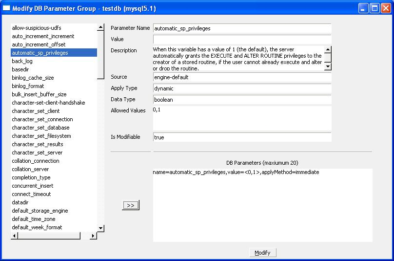

Create DB Parameter Group.
Core Concepts
The sections below outline the core concepts used in this tutorial.DB Parameter Group
DB Parameter Groups allow you to customize the MySQL settings, DB Instances that you create using Amazon RDS come with a default MySQL configuration setting. See Amazon RDS DB Parameter Group Deployment Guide for more info.Create DB Parameter Group
We will create a new group called testdb. You might like to call the group another name that identifies your database.1. Click on the DB Parameter Group in the tree view and then click New button

2. Enter the name testdb, a description press "Create" and the DB security group is created.

3. To view the parameters, select the group from the list and press the

4. To modify the parameters press the

5. Select the parameter to see the parameter details and press the button to select the parameter for modification.

6. In the DB Parameters area set the value of the parameter as required. Also select other parameters to modified. To action the modification press the Modify button.

If a parameter is to be applied immediately then it will be applied to the active database instance(s) using the db parameter group.
If a parameter is to applied pending-reboot then the database instance(s) needs to restarted activate the new parameter.